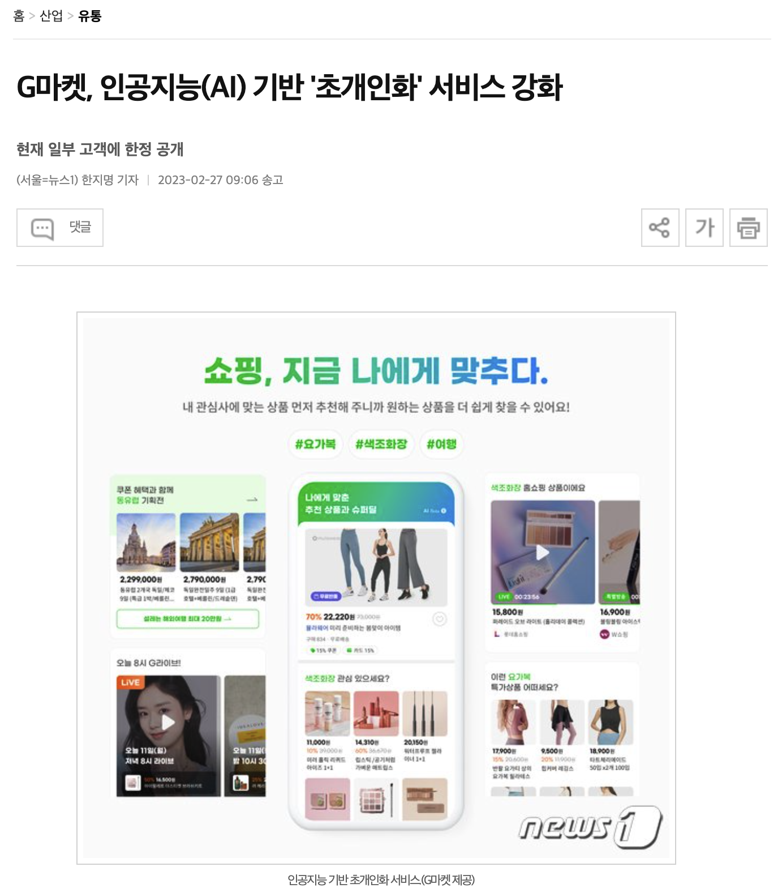
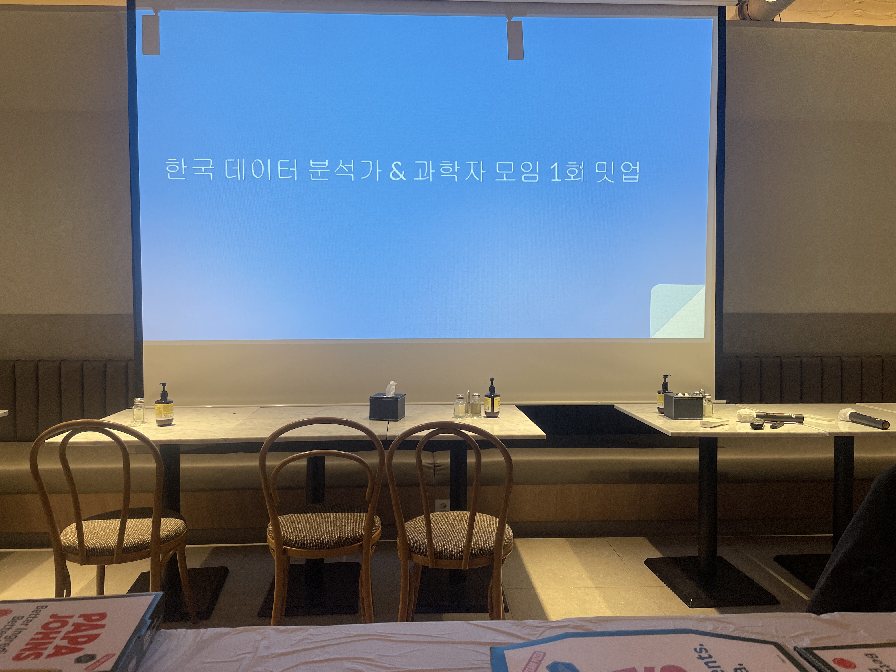
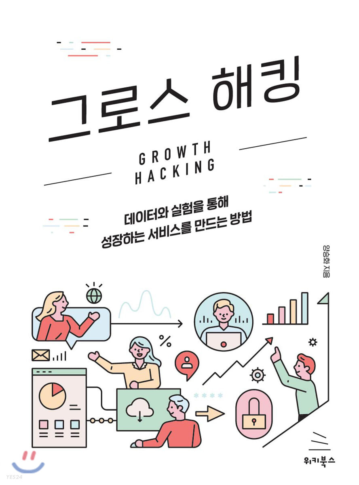

월간 회고록: 2023년 2월
모바일 홈 개인화, 밋업, 통계학, 그로스 해킹

일
모바일 홈 개인화
우리팀1에서 요즘 집중하고 있는 부분은 모바일 홈 개인화이다. 얼마전 미디어를 통해 이 소식을 전하기도 하였다:

작년 한해 몇달동안 여러 팀이 붙어 꽤나 많은 리소스를 투입했던 프로젝트이기에, 데이터 분석이라는 도구를 통해 해당 도메인의 추천 서비스를 고도화/성장시키는데에 도움을 줘야하는 나로서도 막중한 책임감을 가지고 있다. 얼마전 미디어를 통해 이러한 G마켓의 모바일 홈 개인화 소식이 대중들에게 전해졌다는 소식을 듣고, 조금 걱정스러운 마음이 들었다. 10% 고객에게만 배포한 현 단계에서 미디어를 통해 이 소식을 전하는게 맞는가에 관한 생각이 있었기 때문이다.
해당 서비스를 일부 고객에 배포했을 당시, 나 또한 이러한 홍보를 하면 모바일 홈에 관심을 끌게 되어 애초에 홈에 관심이 없던 유저들의 이목까지 끌어낼 수 있지 않을까? 하는 생각을 했던 적이 있다. 그러나, 이 부분은 실험설계 관점에서 봤을 때 상당히 위험한 행위일 수 있겠다는 생각이 들었다. 가령, 우리가 신약의 효과를 검정하고자 하는 실험을 설계한다고 해보자. 보통 이러한 종류의 실험을 설계할 때에는 기본적으로 Single-Blind test를 수행하거나, 여기서 한 발 더 나아가 Double-blind test까지 수행하는 경우가 있다. 두 셋팅의 근본적 목적은 순수한 처리효과2를 보기위함이다. 전자는 피실험자3 본인이 어떤 그룹4에 속했는지 알려주지 않는 실험을 말하며, 후자는 약을 처방하는 의사조차도 본인이 처방할 약이 신약인지 위약인지 모르는 실험을 말한다. 신약의 순수한 효과를 알아보기 위해 이정도 셋팅까지 한다는 말이다.5
이 관점에 바라보았을 때, 개인화한 모바일 홈 10% 고객에게 배포하고 실험을 시작하였을 때 내가 처음에 무심코 했던 “아, 마케팅을 좀 잘하면 홈에 관심없던 고객들까지 유입을 시킬 수 있을거 같은데?”라는 생각은 굉장히 위험하다는 것이다. 이러한 홍보는 결국 모바일 홈 개인화가 우리에게 가져다주는 순수한 효과를 보지 못하게끔 만들기 때문이다. 그래서, 미디어를 통해 G마켓의 모바일 홈 개인화 소식이 전해졌다는 소식을 들었을 때, 모바일 홈 개인화가 가져다 주는 효과가 과대추정(overestimate)되지 않을까 하는 걱정스런 마음이 들었다. 그러나, 얼마지나지 않아 괜한 노파심이라는 생각이 들었다. 냉정하게 생각해봤을 때 G마켓에 관심을 두고 우리 소식을 찾아보는 고객이 몇이나 될까? 지상파 뉴스, CF를 통해 대대적인 홍보를 한 것도 아니고, G마켓에 관심을 두고 우리 소식을 찾아보는 고객이지 않는 이상 이 소식을 캐치하긴 어려울 것이다. 애초에 G마켓의 AI 기술에 관심을 가지고 있는 고객들 자체가 극소수일 것이기 때문에 모바일 홈 개인화의 효과가 과대추정될 일은 없을거라고 생각하고있다.😀 이와는 별개로, 모바일 홈에 내보내고 있는 추천 서비스를 고도화해 나가면서 이에 노출되는 고객 비중들을 차차 늘려가며, 기존의 모바일 홈에 비해 고객들에게 더나은 쇼핑 경험을 제공하고 있다는 판단이 들었을 때는 과감한 홍보 등을 통해 신규 고객들을 유입시키고자 하는 움직임이 필요로 된다고 본다.
개인
데이터 분석가/과학자 제 1회 밋업
지난 2월 23일에는 데이터 분석가 & 데이터 과학자 제 1회 밋업에 참가했다. 장소 마련의 한계로, 추첨을 통해 참가 인원을 선발할 수 밖에 없었는데 운이 좋게도 참가할 수 있는 기회를 얻을 수 있었다. 빅쏠에서 데이터 과학자로 근무하고 계신 이진형님이 데이터 분석가 & 데이터 과학자 모임 오픈 카톡방을 만드신데에 이어, 이렇게 오프라인 밋업까지 주최를 해주셨다.

바쁜 와중에 개인적으로 시간을 내서 이러한 모임을 주최하는 것은 정말 어려운 일이다. 이 글을 읽으실 일은 없겠지만, 감사의 마음을 한번 더 표해본다. 우리나라에 개발자 생태계는 온라인에 잘 형성이 되어있는 반면 데이터 분석가/과학자 생태계는 잘 형성이 되어있지 않다는 생각이 들었는데, 이제는 데이터 분석가/과학자 직군의 온라인 생태계도 점차 갖추어져 나가고 있다는 생각이 든다. 이러한 형태의 밋업도 그렇고, PAP와 같은 커뮤니티에서 뉴스레터까지 발행하며 업계에 미치는 영향력을 점차 키워가고 있는 것들을 보면 말이다. 한편으로는, 나는 왜 그런 생태계 형성이 잘 안되어 있음에 갈증이 있었음에도 어떤 모임이나 커뮤니티를 만드는 것에 액션을 취하지 않았나 하는 생각도 한다. 그래서, 이런 부분에 액션을 옮긴 분들께는 더더욱 깊은 존경심과 감사함을 가지고 있다.
이번 밋업에서는 세 분이 발표를 해주셨다. 발표 주제는 다음과 같았다:
<데이터의 불모지, 옥외광고 데이터 전략팀은 무슨일을 할까?>
부제: 없는 데이터 만들어 일하는 방법
발표자: 포커스 미디어 데이터 전략팀 강슬기
<채용 데이터 분석하기>
- 발표자: 두들린 한일석
<가입자는 늘어나는데 왜 MAU는 그대로일까?>
- 발표자: 이진형
추천 서비스라는 프로덕트를 성장시키기 위한 데이터 분석을 하고 있는 내가 가장 관심이 가는 주제는 마지막 주제였고, 세 분 모두 발표를 너무 잘해주셔서 정말 재밌게 들었다. 발표가 끝나고, 궁금한 부분들은 질문도 드리면서 적극적으로 참여했다.😂 나는 개인적으로 발표 후 질문은 곧 상대방의 발표를 집중해서 관심있게 들었다는 것의 증거라고 생각하기에, Q&A 시간에 가능하다면 꼭 질문을 드리고자 한다.6 발표 자료는 여기서 만나볼 수 있다.
발표가 끝난 뒤에는, 각자 자유롭게 네트워킹할 수 있는 시간을 가질 수 있었다. 이러한 유형의 모임은 처음이라.. 굉장히 어색했다. 다행히, 많은 분들이 적극적으로 움직여주신 덕분에 여러 사람들과 이야기를 나눠볼 수 있었다. 나는 꽤나 내향적인 사람이지만, 이러한 유형의 모임에는 최대한 적극적으로 참가해보려고 한다. 발표를 들으며 인사이트를 얻는 부분도 있지만, 무엇보다 많은 에너지를 얻어갈 수 있기 때문이다. 나와 비슷한 고민을 하는 사람들이 있구나, 이렇게 열심히 하는 사람들이 있구나 하는 것을 눈으로 보고, 그런 사람들과 이야기를 나누는 것은 내게 정말 많은 에너지를 준다.
당시 밋업을 마치고 돌아오면서도 더 열심히 살아봐야겠다는 생각을 했다. 그리고, 밋업에서 당시 내가 업무에서 몰입하고 있던 유저 행태 분석의 인사이트 추출에도 일정 부분 힌트를 얻을 수 있었다. 밋업을 마치고 집에 도착했을때가 자정을 넘긴 시각이었는데, 여러 인사이트들이 내 머리를 스쳐갔고, 결국 잠을 청하지 못하고 떠오른 인사이트들을 정리하고 새벽 5시쯤 잠에 들었던 기억이 난다.
이건 좀 여담인데, 밋업이 열리는 당일에 선호님7도 출근을 하셨다. 혹시나 하는 마음에 밋업에 참가하시냐고 여쭤볼까 하다가 참았는데, 역시나 밋업 장소에서 만나뵐 수 있었다. 내가 먼저 사무실을 떠났는데, 슬랙 DM으로 밋업에 참가하러 간다고 말씀드렸더니 선호님도 참가를 하신다고.. 네트워킹 시간에 너어무 어색해서, 선호님 곁을 잠깐 찾아가기도 했다.😂 아무튼, 이번 밋업은 여러모로 내게 즐거운 경험이었다.
통계학
산업계로 이직을 하고, 통계학이 생각보다 Data Science/Analytics 분야에 차지하는 파이는 크지 않음을 느꼈던 때가 있다. 당시 일종의 허탈함이 느껴지기도 했는데, 요즘엔 오히려 내 기본에 깔려있는 통계학이 데이터를 볼때에 알게모르게 정말 많은 도움을 주고 있다는 생각을 했다. 이 생각을 문득 했을때, 바로 내 생각을 정리하고 싶은 마음이 있어 페이스북에 포스팅을 했었다. 그래서, 본 소주제는 페이스북 글로 갈음하고자 한다.😀
그로스 해킹
양승화님이 쓰신 그로스 해킹 책을 거진 다 읽어간다. 학계에서 산업계로 넘어와 추천 서비스의 고도화를 위해 데이터 분석을 수행하고 있는 내게 정말 많은 도움을 준 책이다.

책을 읽으며 정말 많은 부분에서 인사이트를 얻었다. 가장 깊은 인사이트를 받은 부분은 지표 설계와 관련한 부분이다. 우리팀에서 제공하는 추천 서비스를 성장시키기 위해서는 대체 어떤 지표를 OMTM(One Metric That Matters)으로 삼아야 하는가에 관한 고민이 있었는데, 이 책에서 정말 많은 힌트를 얻을 수 있었다. 이 부분에 대해서도 책을 읽다가 잠시 덮어두고, 페이스북에다가 생각을 정리했던 적이 있다:
특정 서비스의 고도화를 위해 데이터 분석을 수행하고 있는 사람8이라면, <그로스 해킹>이라는 책은 한 번쯤 읽어볼 만한 책이라고 생각한다.
각주
G마켓에서 제공할 추천 서비스를 만드는 팀이며, 나는 이를 고도화하기 위해 데이터 분석을 수행하고 있다.↩︎
여기서는 신약의 효과라 할 수 있겠다.↩︎
실험 참가자(subjects)↩︎
신약을 투여받는 처리 그룹(treatment group)인지, 위약 또는 기존약을 투여받는 통제 그룹(control group)인지.↩︎
실험 결과에 영향을 줄 수 있는 일말의 모든 것을 제거하기 위한 목적으로, Triple-blind test라는 것도 존재한다.↩︎
이게 맞나?.. 문득, 내 질문이 발표자들에게 어떤 부담이 되진 않았을까 하는 생각이 든다.↩︎
우리팀(AI Product팀) 팀장님이시다.😀↩︎
요즘은 이를 프로덕트 데이터 분석가라고 세련되게 표현하는 듯 하다..↩︎
라이센스
인용
@online{방태모2023,
author = {방태모},
title = {월간 회고록: 2023년 2월},
date = {2023-03-12},
url = {https://taemobang.com/posts/2023-03-12-monthly-memory-202302/},
langid = {kr}
}